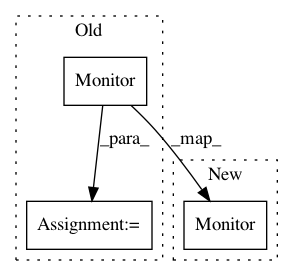

3bfa97213c935c79f824ac308cd5b524c7dceb01,mystic/ensemble.py,,buckshot,#Any#Any#Any#Any#Any#Any#Any#Any#Any#Any#Any#Any#,555
Before Change
from mystic.monitors import Monitor
stepmon = Monitor()
evalmon = Monitor()
if kwds.has_key("itermon"):
stepmon = kwds["itermon"]
if kwds.has_key("evalmon"):
evalmon = kwds["evalmon"]
After Change
if "solver" in kwds: _solver = kwds["solver"]
from mystic.monitors import Monitor
stepmon = kwds["itermon"] if "itermon" in kwds else Monitor()
evalmon = kwds["evalmon"] if "evalmon" in kwds else Monitor()
gtol = 10 // termination generations (scipy: 2, default: 10)
if "gtol" in kwds: gtol = kwds["gtol"]
In pattern: SUPERPATTERN
Frequency: 3
Non-data size: 3
Instances
Project Name: uqfoundation/mystic
Commit Name: 3bfa97213c935c79f824ac308cd5b524c7dceb01
Time: 2015-06-10
Author: mmckerns@968178ea-60bd-409e-af13-df8a517b6005
File Name: mystic/ensemble.py
Class Name:
Method Name: buckshot
Project Name: GPflow/GPflow
Commit Name: b78c1a89a4819cf246aae0724f934349861916cd
Time: 2018-07-10
Author: mikhailbeck@gmail.com
File Name: tests/test_monitor.py
Class Name: TestMonitorIntegration
Method Name: _optimise_model
Project Name: uqfoundation/mystic
Commit Name: 3bfa97213c935c79f824ac308cd5b524c7dceb01
Time: 2015-06-10
Author: mmckerns@968178ea-60bd-409e-af13-df8a517b6005
File Name: mystic/ensemble.py
Class Name:
Method Name: lattice